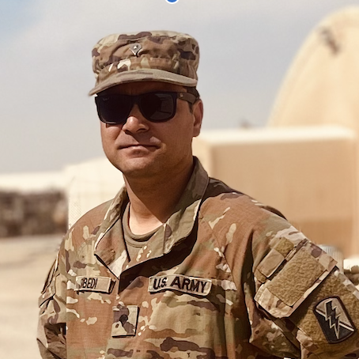

California Army National Guard
14+ Years of ServiceOngoing military service alongside a full-time technology career — building discipline, mission-first thinking, and people leadership that carries directly into civilian Agile teams.
We're a Riverside, California-based technologist — with roots in Nepal — specializing in Agile quality engineering for healthcare and defense-adjacent systems.
From standups to sprint sign-off, I work with teams to build software that blends discipline and elegance. I lead. I test. I get it done — properly.
Riverside, CA
subedi2042@gmail.com

Scrum Master & QA/QE Leader, 14+ year member of the California Army National Guard, and Ph.D. candidate researching Agile Leadership in Information Technology.
Through March 2025, I led quality engineering and Agile delivery for healthcare data systems that serve Veterans and service members — work that included the Electronic Lab Results (ELR) Transfer application at Leidos QTC Health Services. Before that, I led QA and data migration efforts across e-commerce and consumer platforms at Beachbody/BODi and The Irvine Company.
In parallel, I've served 14+ years in the California Army National Guard, which is where my approach to leadership actually started: set the standard, hold the team to it, and take care of your people.
My current focus is doctoral research: a grounded theory study titled "Agile Leadership in Information Technology", examining how leadership actually forms and functions inside Agile IT teams. It's the natural next step after 14 years of practicing it — now I'm studying it. I'm also spending time with my daughter here in Riverside.
One continuous line of leadership. Filter by track, or view it all.
Ongoing military service alongside a full-time technology career — building discipline, mission-first thinking, and people leadership that carries directly into civilian Agile teams.
Conducting a grounded theory study, "Agile Leadership in Information Technology," examining how leadership emerges and operates within Agile IT teams — grounded in 14+ years of practicing it firsthand.
Anticipated Dec 2026Led Agile delivery and quality engineering for healthcare data exchange systems supporting Veterans and service members, including the Electronic Lab Results (ELR) Transfer application.
Led QA strategy and execution for consumer e-commerce platforms, driving test quality across the SDLC in an Agile environment.
Directed data migration quality assurance and QA strategy for e-commerce platforms, including backend, database, and integration testing.
The habits of leadership don't change between a formation and a sprint retro — only the terrain does.
Running Scrum ceremonies, coaching teams through SAFe and Agile transformation, and enforcing engineering rigor and standards.
Building test strategy, automation, and data validation practices that hold up under real production stakes.
Onboarding new QA engineers and offshore teams, and growing people into Scrum Masters and leads of their own.
A military habit carried into IT: define the standard, take ownership of the outcome, and take care of the team getting there.
My life philosophy is “Thaha.” Know your standard. Know your team. Know yourself. It's the same discipline whether I'm in formation, in a sprint retro, or at a dissertation defense — clarity before action, always.
A grounded theory dissertation examining how leadership actually emerges and functions inside Agile IT teams — built on 14+ years of firsthand experience leading Scrum teams, quality engineering efforts, and Agile transformations.
Formal education alongside — and in service of — a career built on continuous learning.
My team and I partner with organizations that are ready to move faster without breaking what already works — modernizing the systems behind the scenes, and strengthening the connections in front of them.
Hands-on leadership for teams modernizing legacy systems, adopting Agile and SAFe practices, or building the quality engineering discipline that keeps fast-moving delivery from breaking production.
A sharp online presence matters as much as a sharp product. We help leaders and organizations build a professional footprint that actually reflects the quality of their work — and connects them with the right people.
If you're leading a team through modernization, or just want your organization's digital presence to match the quality of its work, let's have a conversation.
Start a ConversationOr reach me directly at subedi2042@gmail.com
I also run E4 Apparel, a veteran-owned custom apparel shop. If your company, small business, family event, or church group needs custom t-shirts, hoodies, or other apparel, we've got you covered — no minimum order required.
Have a design ready, or need help creating one? Either way, we'll work with you to get it right.